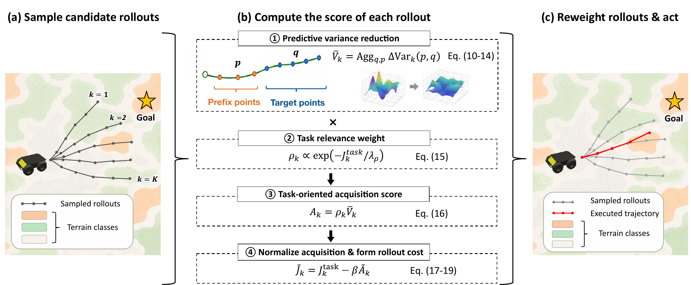
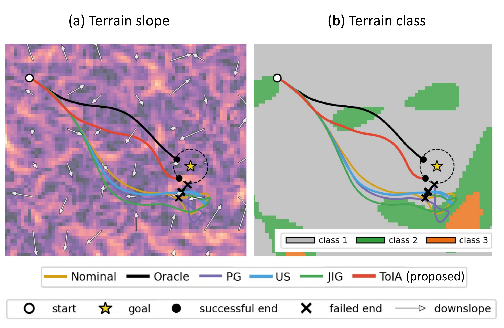

Abstract
Online residual learning can reduce model mismatch in predictive control, but passive data collection may fail to cover states that become important later in a task. Task-Oriented Information Acquisition (ToIA) combines model predictive path integral control (MPPI) with online Gaussian-process (GP) residual learning. It estimates how observations early in a sampled rollout reduce uncertainty at later states on the same rollout, and weights that reduction by task relevance. In simulated off-road navigation on held-out heterogeneous terrain, ToIA improved goal-reaching success over passive GP learning by 19.3 and 27.4 percentage points under dense and sparse learning intervals, respectively.
Method overview
A nominal dynamics model is augmented with GP residuals learned online from observed transitions. The GP posterior mean predicts trajectories; its covariance quantifies the effect of prospective observations. MPPI samples control sequences and weights their rollouts by cost to choose the next action.
ToIA asks how much an early observation would reduce predictive variance at later queries on the same rollout. A weight derived from the rollout's task cost favors information relevant to promising behavior. The score is evaluated on the existing rollout batch, without sampling future observations or re-optimizing for hypothetical updates.
Passive GP learning updates only from encountered data. The task-agnostic baselines instead reward marginal uncertainty or joint information gain without the task-relevance weighting. ToIA links prospective observations to later predictions and their relevance to the task.
Key contributions
- Task-oriented predictive variance reduction for online residual learning in MPPI.
- A rollout-based acquisition score that avoids hypothetical posterior re-optimization.
- Held-out terrain evaluations and an ablation of task relevance under different update intervals.
Experimental results
The simulated vehicle navigates heterogeneous terrain on three held-out maps. Each method is evaluated on 135 runs per learning interval; success means entering the goal region within 10 seconds.

Selected quantitative comparisons
| Method | Dense (1, 5) | Sparse (10, 10) |
|---|---|---|
| Passive GP | 98/135 (72.6%) | 92/135 (68.1%) |
| Pointwise uncertainty sampling | 92/135 (68.1%) | 92/135 (68.1%) |
| Trajectory joint information gain | 88/135 (65.2%) | 93/135 (68.9%) |
| ToIA | 124/135 (91.9%) | 129/135 (95.6%) |
Goal success, paper Table II. Intervals give observation and GP factor update periods in control commands. Completion-time effects were mixed; median differences versus passive GP were zero commands in both settings.
The task-weight ablation indicates that task relevance is especially important with sparse updates. On an NVIDIA RTX 2080 Ti, ToIA's 95th percentile across run-level p95 latencies remained below the 50 ms control period in both settings.
BibTeX
@misc{aoki2026toia,
title={Task-Oriented Active Learning of Residual Dynamics for Model Predictive Path Integral Control},
author={Aoki, Nobuaki and Lee, Hojin and Sosnowski, Stefan and Hirche, Sandra},
year={2026}, eprint={2609.19378}, archivePrefix={arXiv}, primaryClass={cs.RO},
doi={10.48550/arXiv.2609.19378}
}